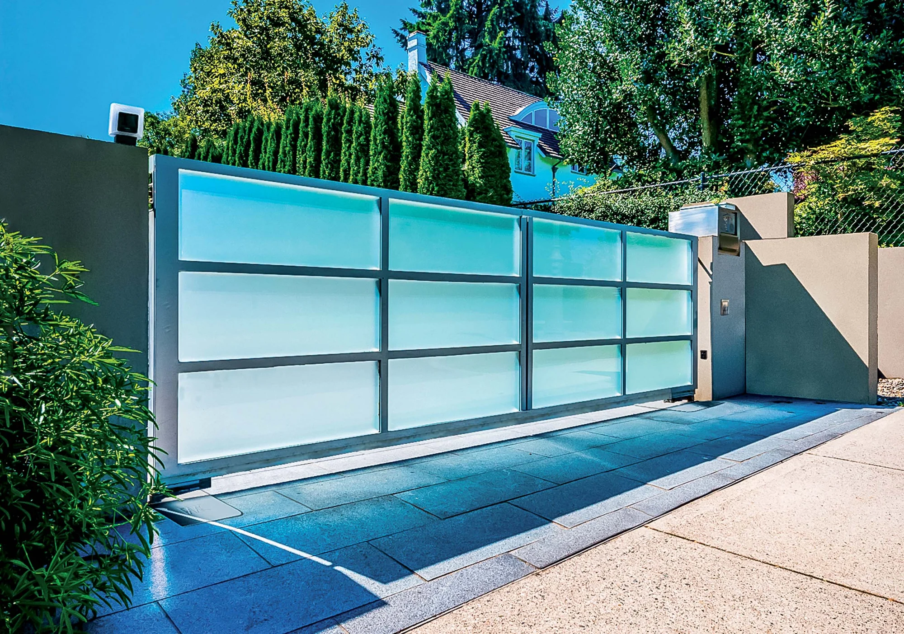
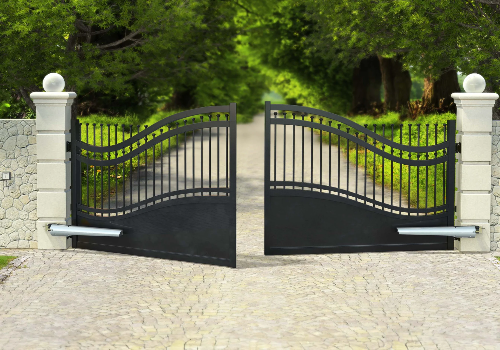
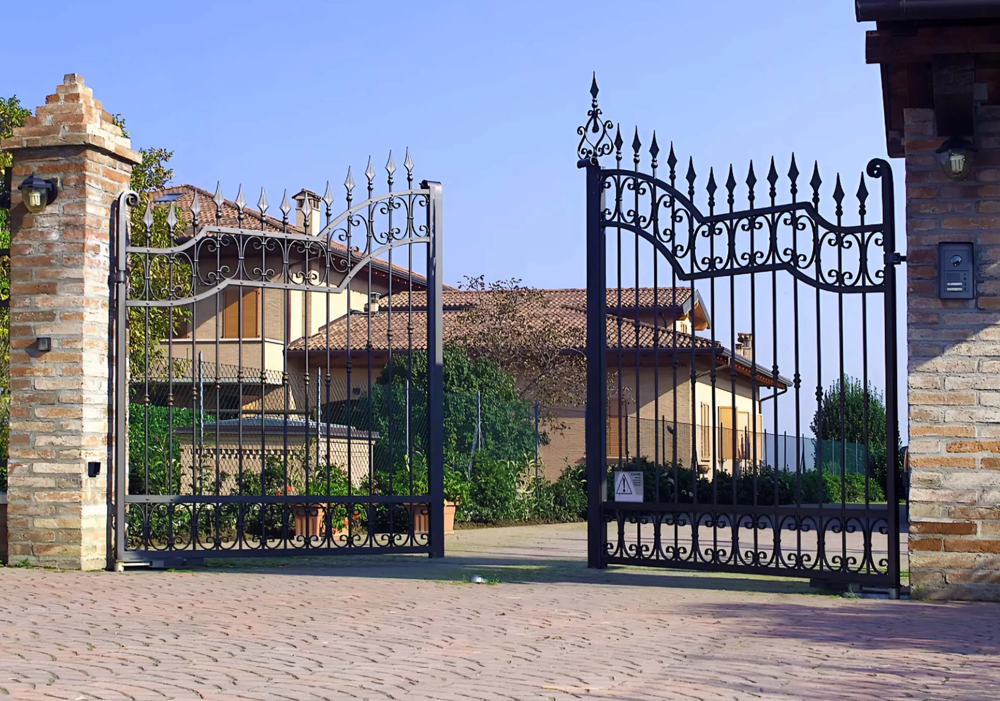
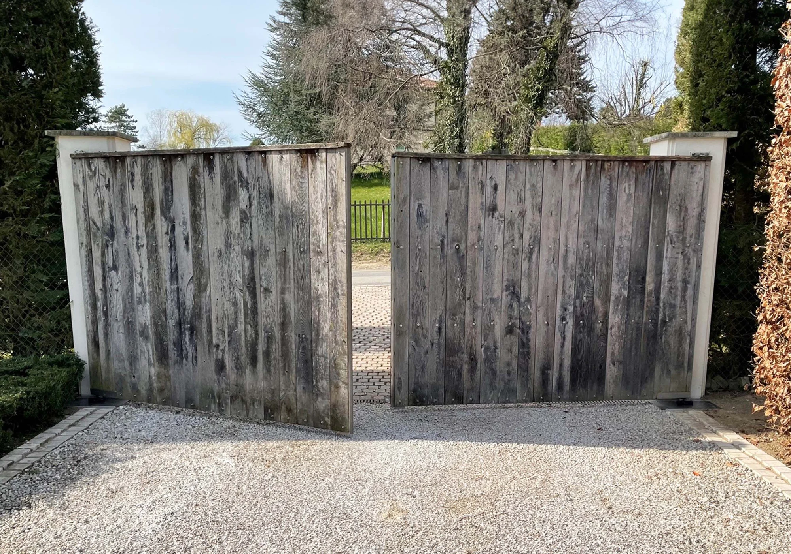
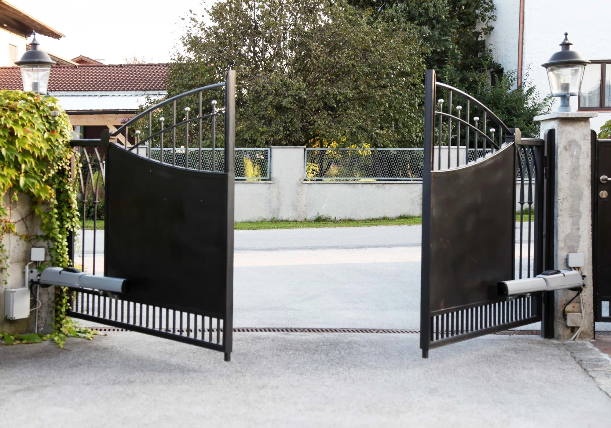
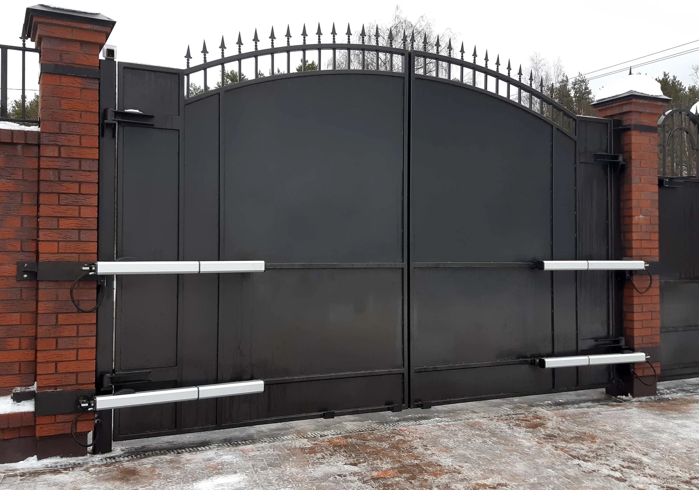
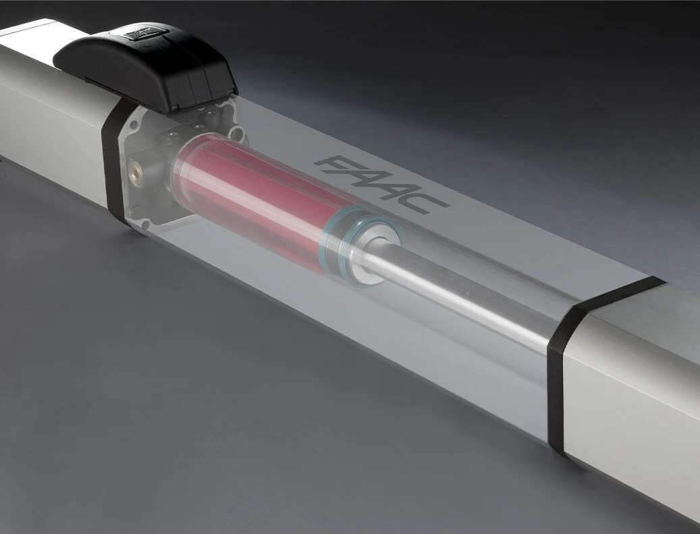
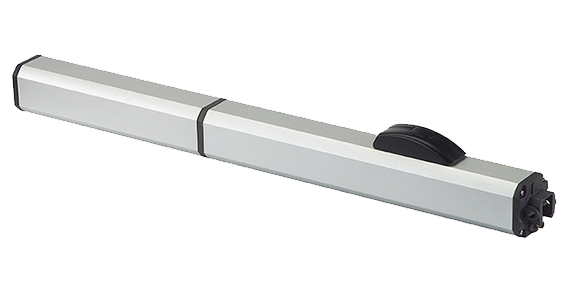
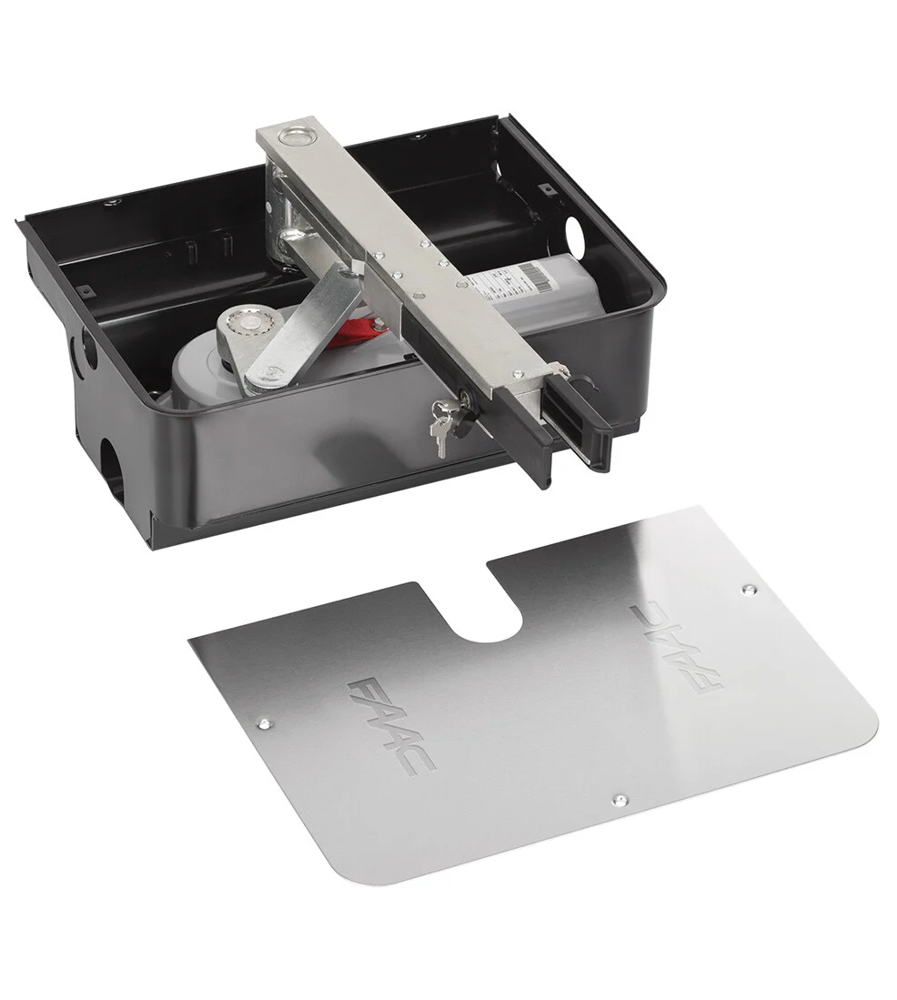

Automatizaciones para puertas batientes con ancho desde 1.3 m hasta 7 m.






Las automatizaciones FAAC para puertas batientes garantizan fluidez en la apertura y cierre de las hojas, hacia adentro o hacia afuera, ofreciendo un acceso cómodo y seguro en cualquier situación.
Gracias a la tecnología oleodinámica, electromecánica e híbrida, estas soluciones están diseñadas para durar y adaptarse perfectamente a tus necesidades, asegurando máxima practicidad y confiabilidad.
Nuestras automatizaciones están diseñadas para instalarse en cualquier tipo de puerta batiente, ya sea de hoja simple o doble, y se integran perfectamente en cualquier contexto: desde residencias privadas hasta complejos residenciales, comercios e industrias de cualquier tamaño.
Para elegir correctamente una automatización para puertas batientes, debes considerar tres elementos fundamentales: las dimensiones de la hoja, su peso y la estructura de toda la puerta.
Además, las automatizaciones para puertas batientes se dividen en dos categorías: con motor externo y con motor enterrado o integrado.
Estas son las tres tecnologías que distinguen hoy las automatizaciones para puertas batientes de FAAC.
Cada una está diseñada para responder a necesidades específicas y ofrecerte la máxima flexibilidad.

La tecnología oleodinámica es el símbolo de la excelencia FAAC y sigue siendo nuestro orgullo. Fuimos los primeros en introducirla, en 1965, en el ámbito de automatizaciones para puertas.
Utilizar la oleodinámica en este sector requiere un alto nivel tecnológico y precisión absoluta en el ensamblaje.
Esto nos permite ofrecerte todos los beneficios de esta tecnología, aplicable en múltiples contextos con rendimiento siempre excelente.
El 400 es el actuador oleodinámico externo para puertas batientes más vendido de FAAC, famoso por su alto rendimiento, comodidad y seguridad.
El dispositivo de desbloqueo protegido por llave asegura un control total de tu puerta.
FAAC 400 tiene un movimiento extremadamente silencioso, permitiéndote abrir y cerrar tu puerta con discreción.
Gracias al bloqueo hidráulico, disponible en versiones CBC y CBAC, tu puerta resistirá intentos de intrusión.
Puedes elegir también la versión irreversible en apertura CBAC, con bloqueo en apertura y cierre, o la versión reversible SB o SBS (sin desbloqueo - sin desbloqueo lento).


FAAC 412 es un actuador irreversible y no requiere electrocerradura, ofreciendo seguridad sin complicaciones.
FAAC 412 te garantiza una instalación y mantenimiento sencillo y rápido.
El dispositivo de desbloqueo, ubicado en la parte trasera del actuador, es fácilmente accesible y te permite gestionar tu puerta con total comodidad.